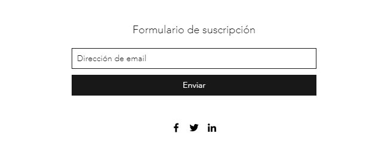

PAGINA WEB PROGRESIVA
Beneficios
Beneficios de aplicaciones web progresivas:
De esta forma, a la hora de utilizar apps progresivas,
obtendrás varios beneficios si las comparamos con las aplicaciones convencionales que todos tenemos instaladas.
Entre ellos, encontramos los siguientes:
- Mayor rendimiento.
- Carga de contenido casi instantánea.
- Utilización de una menor cantidad de recursos –almacenamiento, RAM, etc.– .
- Menos trabajo y necesidad de inversión a la hora de desarrollarlas
